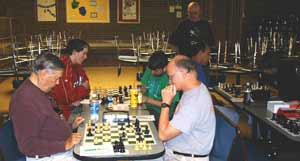
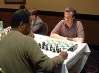
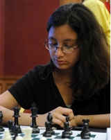
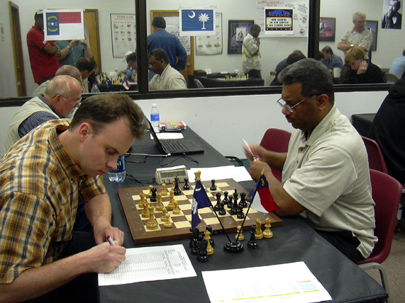
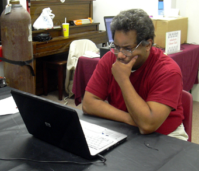
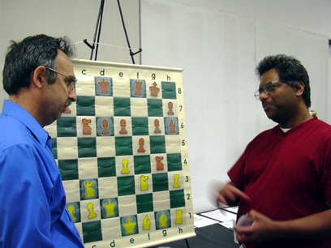

Recent Results and
Events
Mabe and Simpson Share a TACO
NM's Chris Mabe and Ron Simpson won three games and drew a hard fought
battle with each other to tie for first in the Top Section of the TACO in
Raleigh on Nov 21. Larry Williams and Gordon Ray split the class prize.
In the lower Section, Norm Pruitt kept his TACO all to himself by sweeping
with a 4-0 score. Strong performances were also turned in by Henry Johnson
and NCCA 1st Vice President Walter High, each with three.
Lenoir Open

A grand total of 40 players competed in the Lenoir Open on Saturday, November 14. Section winners were Randy Lovelace, Steven Sauer, and Luis Gonzales. West Caldwell HS won the scholastic team section, which also drew schools from Guilford County and Johnson City, Tn (!). John Thomas and Randy Lovelace directed.
MABE WINS
2009 NORTH CAROLINA GRAND PRIX

NM Chris Mabe Shows Off The Winning Check
In an exciting finish that went down to the last game, Charlotte NM Chris Mabe has won the 2009 North Carolina Grand Prix, taking home a check of over $400! The Grand Prix came down to the final event, the NC Open. Chris needed to place in the points and ahead of Raleigh NM Ron Simpson in order to win. Needing a last round win against Expert David Erb in order to clinch the Grand Prix for himself, Ron fought valiantly to win but David was up to the challenge and held the draw in a complex ending.
The Under 1800 prize was won by Brian Moore. Under 1600 was taken by Kevin Chen, and the Under 1400 prize was won by William LeFew. (Please send your mailing addresses to gary.newsom@queencitychess.com and I will send out the checks.)So ends a successful first year of the Grand Prix. With the changes in points calculation to level the playing field; and our new sponsorship with ChessCentral, look for the 2010 Grand Prix to be even bigger and better.
Asheboro Open
Eighteen players decided they were ready for even more chess after last week's North Carolina Open and travelled to Asheboro to compete in the 51st edition of the Asheboro Open. This event also marked the beginning of the 2010 North Carolina Grand Prix sponsored by ChessCentral. Current Grand Prix champion, former state champion Chris Mabe came through with the victory in the top section, giving up a draw with Josh Lawson, who is now so close to making expert he can taste it! Lawson tied for 2nd with Asheboro's own Jon McNeill. In the Candidates section, rapidly improving Charlie Carerros swept the field with a 3-0 score and picked up 67 rating points! Second place was shared by Praveen Suthaharan and Norm Pruitt, each with two. Next up for Asheboro is a December 5 date. Thanks to all in NC for their continued support of this event."
NC Open
A grand total of 108 players competed in the 2009 version of the North Carolina Open held over Halloween weekend in Greensboro. Apex resident IM Jon Schroer came through with a
4 ½ score to win the tourney, giving up only one draw; to Virginia LM Rusty Potter.

Schroer in action against Ron Simpson
Photo by Tom Hales
Jon was paired in the last round with Ashville resident and former state champ FM Miles Ardaman. Miles declined an early offer to split the point and these two warriors battled it out for most of five hours before Schroer prevailed to win the title.
The 2009 NC Grand Prix race also came down to an exciting last round finish. NM Chris Mabe dispatched of his round 5 opponent early and the ball was in FM Ron Simpson’s court. A win for Ron and the 2009 NCGP title would be his. Any other result and Mabe would take the prize. Ron fought gallantly but his opponent, Expert David Erb was up for the challenge. David held the draw in a mind numbing endgame and allowed Mabe to take the crown.
Other results:
U2000 1st Bradley Marts and Tim Rankin 4-1
U1800 1st Steve Pizzo 2nd David Spencer
U1600 1st William LeFew, Joseph Micklos and Dutta Suryabrata
U1400 1st Christopher Prados 2nd Tim Staley
Scholastics 1st Steven Wang
The tournament was well run by first time Open director Keith Hooker. He was assisted by NTD Thad Rogers.
FM Simpson Goes 3-0 to Grab Asheboro Open
FM Ron Simpson got back to his winning ways as he posted a perfect 3-0 score to grab the Top Section of the Asheboro Open 48 Aug. 8. In the Candidates Section, Dana Daves went a clean 3-0 to grab first place. A total of 24 players participated. Check out the crosstable.
NM Mabe Continues
Winning Streak at Reverse Angle in Charlotte
A total of 46 players participated in the Reverse Angle event Aug. 1 on the campus of UNC Charlotte. NM Chris Mabe kept up his winning ways as he rolled to a 3-0 result and first place in the Open Section. NM Klaus Pohl and Dominique Myers were second at 2.5/3.0. In the Under 1800 Section, Gil Holmes posted a perfect 3-0 mark for first place. In the Under 1400 Section, Cameron Chandler went 3-0 to grab the top spot. In the Under 1100 Section, Tony Sanders posted a 2.5/3.0 mark to take sole first place. Check out the crosstable.
NM Jones, Marts Tie at Master Trek 21 in Durham
NM Craig Jones and Bradley Marts posted two wins and a draw to share first place at the Master Trek 21 top section Aug. 1 in Durham. Winners in the eight-player scholastic sections at 3-0 were: Dalton Xue, Alexander Chang and Josiah Brinson. Jineet Patel and Thomas Wang tied for their section at 2.5/3.0 A total of 42 players participated. Check out the crosstable.
David High Represents N.C. at Elite High School Tournament
North Carolina scholastic champion David High finished at 2.5/6.0 at the GM Arnold Denker Tournament of High School Champions Aug. 1-4 in Indianapolis. The Chapel Hill player earned the right to represent North Carolina by winning the K-12 Section of the N.C. State Scholastic earlier this year. Abby Marshall of Virginia was the overall winner. Check out the results.
Indira Puri Leads North Carolina Players at Polgar Invitational
Indira Puri and Nicole Spencer, co-champs at the N.C. All Girls Open in May in Matthews, represented the state at the GM Susan Polgar National Invitational for Girls, July 26-31, at Texas Tech University. Puri scored 4.0/6.0 to finish in a tie for eighth place. She also finished in eighth place in the K-12 Section of the N.C. State Scholastic. Spencer finished the tournament at 2.0/6.0. This is the sixth year of the event, which brings together the top scholastic girl players in the nation. This is the third year in a row that North Carolina had a Top 10 finisher. Yang Dai of Virginia was the overall winner. Check out the crosstable.
NM Chris Mabe Leads the Way at LPO in Winston-Salem
NM Chris Mabe scored 4.0/5.0 in a rugged field to secure the top spot in the Open Section at the LPO, July 24-26, in Winston-Salem. A total of 132 players participated in the action.
In the Under 2200 Section, New York�s Sam Barsky posted a 4.5/5.0 score to grab sole first. In the Under 2000 Section, Yuval Shemesh posted a 4.5/5.0 result to capture first place. In the Under 1800 Section, Cheng Chu went a perfect 5-0 for the top spot. In the Under 1600 Section, Matt Embler went 4.5/5.0 to grab the top spot. In the Under 1400 Section, Leo Poppante posted a 4.5/5.0 result to take top honors. Check out the crosstable.
Mabe Goes 3-0 To Grab Asheboro Open Top Prize
NM Chris Mabe turned in a perfect 3-0 performance to grab the Top Section at the Asheboro Open 47 July 11. There was a logjam in the Middle Section as Kevin Chen, Henry Wactor and Joshua Taylor all knotted at 2.5/3.0. In the Lower Section, David Blair finished up with an undefeated 3-0 mark to grab top honors. A total of 36 players participated. Check out the crosstable.
Zhang Takes Top Quad At Raleigh Chess Academy.
Alvin Zhang padded his rating as he went 2.5/3.0 to grab the top quad at the Raleigh Chess Academy tournament July 12. Other quad winners were: Nathan Tong, Alexander Tong, Pranjal Saxena and Grant Isemonger. A total of 23 players participated. Check out the crosstable.
Chu, Kozbur Claim Top Spots At TACO
A total of 29 players participated in the Triangle Area Chess Open (TACO) June 20 in Raleigh. In the Top Section, Cheng Chu posted a solid 3.5/4.0 score to grab first place. In the Lower Section, Damian Kozbur went a perfect 4-0 to claim the top spot. Check out the crosstable.
Chu, Johnston Grab Sections At Greensboro 2
A total of 13 players participated in the Greensboro Open 2 June 13. In the Top Section, Cheng Chu returned to tournament chess after a long absence and posted a perfect 3-0 score to grab first place. In the Lower Section, Henry Edward Hooper Johnston made his first tournament count as he won with a 3-0 mark. Check out the crosstable.Masters Mabe, Pohl Share Crown at Reverse Angle 14
A crowd of 53 players took part in the Reverse Angle 14 on June 13 at UNC Charlotte. In the Top Section, NM Chris Mabe and NM Klaus Pohl both turned in 3-0 marks to tie for first place. In the Under 1800 Section, J.P. Flynn posted a perfect 3-0 score to claim first place. In the Under 1400 Section, Shouri Gottiparthi went 3-0 to claim the top spot. In the Under 1100 Section, Dean Tran and Milaan Shah both were 2.5/3.0 to share the first place. Check out the crosstable.
Mabe, Suich Tie for First at Orchard Lake Grand Prix
NM Chris Mabe and Tennessee�s Peter Suich both posted 3.5/4.0 scores to tie for first at the Orchard Lake Grand Prix June 6 in Saluda. A total of 34 players participated in the action. Check out the crosstable.
In the Orchard Lake Blitz, Michael Lipkin and Suich posted 6.0//7.0 to tie for first place. Check out the crosstable. In the Orchard Lake Beginner Section, Alexander Dun Yin Tong went a perfect 5-0 among the group�s 14 players to grab sole first place. Check out the crosstable.
Greensboro's Zakir Ahmed Scores Victory at Asheboro Open
Dateline
June 6, 2009: Asheboro
hosted forty fine chess players this past Saturday, including NM Maurice
Dana and former NC Champion Dan Liu.
FM Ron Simpson had made plans to attend as well, but had a work
emergency arise and spent a good part of the proceeding night repairing
a RADAR station. When
extreme weather is on the way, my money in on Ron Simpson!
A
large number of draws led to a free-for-all in the Championship Section.
Greensboro's Zakir Ahmed was unyielding, however, and went
3-0 to secure 1st place and $163.00.
Second place and the class prize was split five ways, with the
following players awarded $24.00 each:
NM Maurice Dana, Adam Holmes, David High, Jeff Jones, and Marc
Roche.
The
Candidates Section had three clear winners.
After a 1.g4!? slugfest with Asheboro's Rick Upchurch,
Fayetteville's Larry Williams prevailed and went 3-0 to win clear 1st
and $163.00. Scholastic
sharp-shooter Kevin Chen earned clear 2nd and $80.00 with 2.5 points.
After his heartbreaking loss to Williams in round one, Rick
Upchurch won his final two games and was awarded the class prize of
$42.00.
The
Club Section was both interesting and competitive this month.
Chapel Hill's Toban Login brought five of his students, including
twin brothers Samir and Liam Llamazares of Spain.
The final round was hard-fought, as Arturo Suarez squared off
with his teacher Juan Sierra for all the marbles.
Mr. Suarez prevailed to win $163.00 and first place honors.
Second place and $80.00 was awarded to Anders Janson, who is
clearly on his way up the ratings chart after just seven games!
Spain's Samir Llamazares went 2-0 to earn the class prize of
$42.00. Congratulations are
in order for all of these tough competitors.
Many of the games in this section went the distance, and such
fighting spirit is a joy to behold.
The Asheboro Open 46 was a fantastic event, with forty players competing for $855.00 in cash prizes. Thanks to all who participated, especially NM Maurice Dana, who made a grueling four-hour trek from near Morehead City. Tom Hales directed, and Jonathon McNeill assisted. (Article and photo by Hales) Check out the crosstable.
Will and Grace Campbell Undefeated at N.C. High School Class
Brother and sister Will and Grace Campbell both posted perfect 4-0 scores to tie for first among individuals at the 20th Annual N.C. High School Class Championship May 23 in Newton. In the team competition, Newton-Conover HS took the top spot. Other class winners: 2AA � West Caldwell HS; 3A � T.W. Andrews HS and Northern Guilford HS; 3AA � Harnett Central; 4A -- Alexander Central; At Large � Laurel Hill Academy. A total of 40 players participated. Check out the crosstable.
NM Maurice Dana Grabs TACO 51 Title
NM Maurice Dana post three wins and a last-round draw to claim the Open Section of the Triangle Area Chess Open 51 May 16 in Raleigh. Adam Holmes and David High claimed clear second at 3.0/4.0. In the Advanced Section, Victor Beaman posted a 3.5/4.0 score to grab first place. Daniel Su was clear second at 3.0/4.0. A total of 26 players participated. Check out the crosstable.
FM Chumachenko Goes 3-0 To Take Asheboro Open
FM Andrey Chumachenko posted three straight wins to grab the Championship Section at the Asheboro Open 45 May 9. Alex Cibotarica was clear second at 2.5/3.0. In the Candidates Section, Jordan Joseph posted a perfect 3-0 mark to claim first place. In the Club Section, Eric Thomson also went 3-0 to grab the top spot. A total of 31 players participated. Check out the crosstable.
NM Craig Jones Goes 4-1 to Claim Third Invitational Crown
NM Craig Jones of Chapel Hill posted a strong 4-1 mark to capture his third N.C. Invitational title May 1-3 in Huntersville. Jones also won the title in 2005 and 2006. He edged out NM Chris Mabe, who finished second with a 3.5/5.0 mark. Also competing were: NM Maurice Dana, FM Ron Simpson, Shawn Pealer and Gary Newsom. Each year, the N.C. Invitational brings together the top, most active players in the state for a round robin event.
Jones Masters the Field at Master Trek Event in Durham
Total of 35 players
tried out some Sunday chess at the Master Trek 18 April 26 at
Durham Academy. In the Adult/Scholastic Section, NM Craig Jones reeled
off a 3-0 mark to claim first place.
Other sections were divided in roughly eight-players sections. Winning their sections outright were: Ivan Kuznetsov, Robert Hellinga and Judd Staples � all at 3-0. Dalton Xue and Ryan White tied at 2.5/3.0 in the other section. Check out the crosstable.
Joseph, Simonsen, Lopez Go 3-0 in Lenoir
A total of 24 players competed at the Spring Foothills in Lenoir April 25. Players were grouped in quads for three rounds of action. Winning their quads with a perfect 3-0 score were: Nicholas Joseph, David Simonsen and Bryan Lopez. Tying at 2.5/3.0 in their quad were Randy Lovelace and Alex Cibotarica. Tying at 2.0/3.0 in their quad were Matt Embler and Andrew Simonsen. Check out the crosstable.
Chen,
Reid Claim Top Spots in Winston-Salem
A total of 31 players participated in the Spring 7 Scholastic in Winston-Salem April 25. In the K-12/K-8 Section, Kevin Bell Chen posted a perfect 4-0 mark to claim first place. In the K-3/K-5 Section, Jedd Reid also went a perfect 4-0 to claim the top spot. Check out the crosstable.
Shocking Results at the TACO 50!
Bragging Rights for North & South at Border Battle 2009
Dateline April 19: NM Phillip Lamby of South Carolina defeated NC Champion FM Ron Simpson at the NC-SC Border Battle this weekend. The final score was Lamby 2.5, Simpson 1.5. After the match, the two shook hands and proceeded to play about 10,000 blitz games (a slight exaggeration), with an unknown final tally. Congratulations to NM Lamby on his fine performance and victory!
NC Scholastic Champion David High fought a tooth and nail battle with SC's Daniel Dodds. The first two games ended in three-fold repetition, followed by another draw. In the final round, High claimed the white pieces and the victory, to win the match 2.5-1.5. SC's Dodds played an excellent match, and had it gone to a game five, who knows the outcome! Congratulations to David High for hanging in there, and bringing home the victory!
After some last-minute cancellations for the NC team, just one Expert and one A player were left to compete. However, Team Newsom-Lawson proved up to the task, scoring 5.5 out of a possible 8 points, helping lead the North Carolina Team to a convincing victory with 29.5 points. South Carolina hung tough, though, scoring a respectable 18.5 despite a large early deficit.
Some noteworthy performances were turned in by many players. NC's William Lefew went undefeated at 4-0 to lead the NC Team in points, and Joerg Lohse of SC was sizzling with a 3.5 finish. NC's Scholastic Secret Weapon Allen Jiang finished with 3.0, bouncing back from a heartbreaking loss in a clearly won game. The only female player, Sara Walsh of Jacksonville, NC, was undefeated with 2.5 points.
South Carolina owned the Saturday Night Blitz tournament. The seven-round unrated Game/5 event saw Speed Demon James MacDougall smoke the competition with 6.5 points, followed by fellow South Carolina Blitz-Master Keith Eubanks with 5.5. Josh "Lawman" Lawson was the top NC finisher at 4.5, tying SC's Kevin Kane. Rounding out the top six were Gary Newsom and David High, with 4.0 each. Upset Honors go to Walter High, who was beaming after an upset win over Greensboro's Zakir Ahmed, whose endgame talents are best expressed in slower games.
The spirit of this event was one of friendly rivalry, with a side order of camaraderie. Randolph Mall proved to be an excellent venue, and many players took advantage of the convenient food and shopping. One player even got a haircut! The event was covered locally by The Courier Tribune, who will feature a front-page photo of the championship match.
For a complete cross-table, click HERE. For extended coverage of the Championship Match, see the SCCA website HERE. Includes all four games, with commentary by NM Chris Mabe. The NC-SC Border Battle 2009 was directed by Tom Hales and David Grimaud. (Article by Hales)
We want to express our best wishes to the Giannatos family. Peter Giannatos was unable to play this weekend after his father was in a serious car accident. Please keep them in your thoughts and prayers.
Raleigh Chess Academy's Sunday Quads a Winner For Scholastic Players
Dateline April 5, 2009: Sixteen scholastic players gathered in Raleigh Sunday for some great USCF-rated chess competition. The players were divided into four quads for three rounds of play. In Section One, a statistical hiccup occurred with three of the four players tying at 2-1! These were: Lawrence Bacudio, Joseph Sharpe, and Jacob Henderson. What a competition! In Section Two, clear first place went to Shreyas Ashok at 3-0, and second place to Joshua Henderson at 2-1. In Section Three, Kenan Balkas and CJ Van Vooren tied for first place honors with 2-1 each. Last but not least, Section Four was dominated by Tanay Bali with a perfect 3-0 sweep. Fellow competitors split second place evenly: David White, Victoria Finger, and Luke Henderson.
This tournament was sponsored by the Raleigh Chess Academy under the direction of Steven Abrahams. For a complete cross-table, click HERE.
Simpson Loses Championship Bid By A Hair; Chumachenko Wins Asheboro Open 44
Dateline April 4, 2009: FM Ron Simpson narrowly lost his Champion of Champions Battle this Saturday. Our humble hero had just recently gotten over a bug, and wasn't even sure if he would make the match. He split his regular games with New Jersey's Mackenzie Molner, winning as white. They again split the three minute playoff games in the same fashion. Finally, one final "Armageddon Game" settled the match. Unfortunately, Simpson didn't understand the special match rules going into the final game. Ron had the black pieces, and started with a minute less on his clock--but with draw odds. While this misunderstanding was indeed unfortunate, Simpson admitted that he had missed a good opportunity to win the final game. It was an exciting match for all to behold, with a large demo board for spectators to observe. We want to thank Ready Telecom of Asheboro for donating a rock-solid DSL connection to help make this event possible.
The Championship Section was dominated by FM Andrey Chumachenko, who actually spent much of his time focused on Simpson's games. His 3-0 sweep netted him $150.00, and an even greater lead in the NC Grand Prix. Greensboro's Josh Lawson was clear second with 2.5 points, yielding the draw to tough Josh Taylor, who managed to completely lock up a position so that progress was impossible for either side. Lawson won the second place prize of $70.00, and his own share of NC Grand Prix points.
The Candidate's Section was quite competitive, and featured NCCA President Victor Beaman bringing it from Greenville! Beaman had a solid showing at 2-1. When the smoke cleared, two players were tied for first place with 2.5 points each: John Retarides and Emil Mayev. Each earned $110.00 in cool cash, and plenty of hot NC Grand Prix points.
There were many memorable moments at the event. Mark Gragg upset FM Simpson in round one. Ron had planned to play two of the three rounds, but could not complete that quest due to his Internet play. (How many would even attempt such a feat??). Simpson and Chumachenko teamed up for some awesome analysis on the demo board before round three (see photo above). NM Leland Fuerstman made a rare appearance, and also actively participated in the session. Some new players darkened our doors: Greensboro's Tony Sanders earned 151 rating points with a solid performance, Leonardo Sotaridona put up a fierce fight against FM Chumachenko in round one, and Joe McDonald soldiered his way through his very first USCF regular-rated event. On a personal note, I want to welcome back Larry Williams, and his wife Theresa (who did not play). Asheboro tournaments don't feel quite right without them.
Twenty-four players competed in the tournament, with $500.00 in cash prizes. Tom Hales directed, and soon-to-be Expert Jonathon McNeill assisted. For a complete cross-table, click HERE. (Article by Hales)
Click here for March 2009 Results
Click here for January-February 2009 Results
Send comments, questions, or problems relating to the website to the webmaster.
Copyright © 2001-09, North Carolina Chess
Association